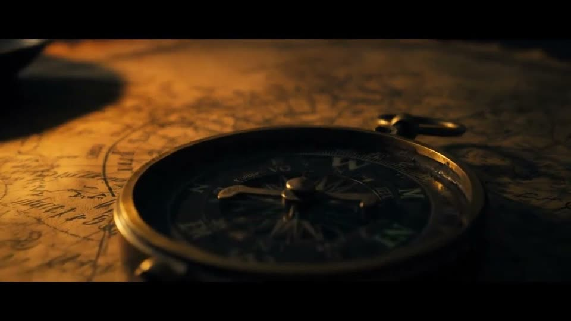

A slow, dramatic zoom in on a mysterious, ancient compass lyin…
CAM-048Camera moves / shotsGoogle Veo (official guide example)by Google Cloud (official Veo prompt guide)2026-10-17

Arc shot: the camera moves in a circular or semi-circular path around the subject. For example, "arc shot around a couple embracing in the rain." Example: The following video and prompt demonstrate a zoom-in camera movem
Prompt
A slow, dramatic zoom in on a mysterious, ancient compass lying on a dusty map. The camera starts wide, showing the map and a flickering candle, then smoothly zooms in until the intricate, glowing symbols on the compass face fill the entire frame
Tags: zoom, slow zoom